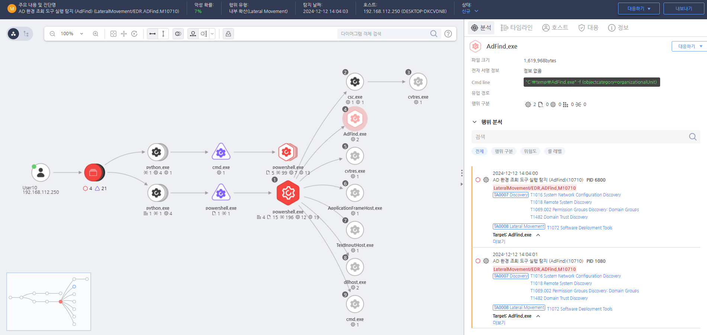

T1615.000.01 Adfind을 Active Directory정보 수집
D3FEND
MITRE ATT&CK 액션을 기준으로 대응 방안을 작성
Detection
모니터링을 통해 Active Directory 정보를 수집하는 도구 'Adfind'의 실행을 확인합니다.
Detection(EDR)

https://172.18.10.125:8903/#/analysis/incident/675a6fae002dc796000018aa
Response
공격자가 생성한 파일을 삭제합니다.
Mitigations
도메인 간 신뢰 관계 제한 (M1026 - Privileged Account Management)
- 도메인 간 신뢰 관계를 최소화하고, 신뢰 관계가 필요한 경우 가장 적합한 범위로만 설정
- 도메인 트러스트를 관리하고 신뢰할 수 없는 도메인 간 신뢰 관계를 설정하지 않도록 주의
- 도메인 간 신뢰 관계의 단방향 설정을 사용하여 한쪽 도메인만 다른 도메인에 신뢰를 허용하도록 구성
도메인 신뢰 관계 탐색 방지 (M1031 - Network Segmentation)
- 네트워크 세분화를 통해 내부 네트워크에서 다른 도메인에 대한 접근을 제한
- 세분화된 방화벽 및 라우터 규칙을 적용하여 도메인 간 불필요한 통신을 차단
PowerShell 및 Netdom 사용 모니터링 (M1047 - System Logging & Monitoring)
- PowerShell 스크립트 및 Netdom 명령어 실행 로그 감시
- Event ID 4688 (새로운 프로세스 생성) 및 Event ID 4648 (명시적 인증)을 사용하여 도메인 신뢰 관계를 확인하는 명령어를 탐지
- EDR/XDR 솔루션을 통해 의심스러운 도메인 신뢰 탐지 활동을 실시간으로 모니터링
도메인 관리자 계정 보호 (M1026 - Privileged Account Management)
- 도메인 관리자 계정에 대한 강력한 보호 (최소 권한 원칙 적용)
- 다중 인증(MFA) 적용하여 관리자 계정의 무단 접근을 방지
- 도메인 관리자 계정의 사용을 최소화하고 관리자가 아닌 사용자에게 권한을 부여하지 않도록 설정
비밀번호 정책 및 암호화 강화 (M1027 - Password Policies & M1040 - Security Configurations)
- 강력한 비밀번호 정책을 적용하고 비밀번호 복잡성 및 주기적인 변경 요구
- 암호화된 연결을 통해 도메인 간 신뢰 관계를 보호하고, 민감한 정보가 평문으로 전송되지 않도록 설정
Affected Techniques
Action 실행시 함께 영향을 받는 다른 Techniqes
| ATT&CK |
| T1615 |
| T1033 |
| T1069.002 |
| D3FEND |
| D3-NNI Network Node Inventory |
| D3-NM Network Mapping |
| D3-AM Access Modeling |
| D3-SM System Mapping |
| D3-DAM Domain Account Monitoring |
| D3-LAM Local Account Monitoring |